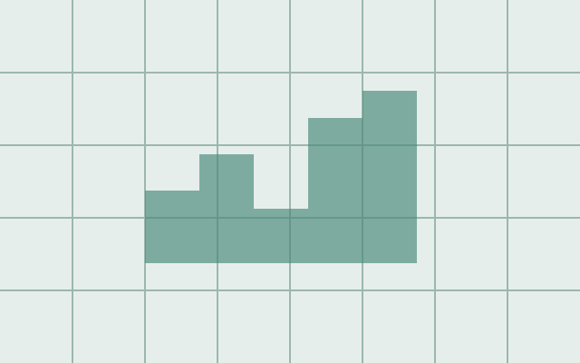

Software, machine learning, and data visualization.
The first two projects are from my resume. The remaining cards are placeholders for future coursework.

A React and TypeScript application that uses Spotify listening history to recommend personalized album posters. FastAPI and PostgreSQL power the backend, with K-Means clustering to find covers with similar color palettes.July 2026 · Completed project
Prosthetic Arm Gesture Mapping Tool
An LSTM-based gesture recognition model for multi-channel biosignals. A SciPy preprocessing pipeline and training improvements increased performance by 20%, reaching 97.32% accuracy.November 2025–Present · Resume project
Exploring a Dataset
A space for a future data visualization project. This placeholder will be replaced with the project’s question, methods, findings, and a link when the work is complete.Placeholder · Future coursework
Categorical Data Visualization
A space for a future data visualization project. This placeholder will be replaced with the project’s question, methods, findings, and a link when the work is complete.Placeholder · Future coursework
Comparing Distributions
A space for a future data visualization project. This placeholder will be replaced with the project’s question, methods, findings, and a link when the work is complete.Placeholder · Future coursework
Time Series Exploration
A space for a future data visualization project. This placeholder will be replaced with the project’s question, methods, findings, and a link when the work is complete.Placeholder · Future coursework
Mapping Geographic Data
A space for a future data visualization project. This placeholder will be replaced with the project’s question, methods, findings, and a link when the work is complete.Placeholder · Future coursework
Interactive Data Dashboard
A space for a future data visualization project. This placeholder will be replaced with the project’s question, methods, findings, and a link when the work is complete.Placeholder · Future coursework
Scrollytelling with Data
A space for a future data visualization project. This placeholder will be replaced with the project’s question, methods, findings, and a link when the work is complete.Placeholder · Future coursework
Expository Visualization
A space for a future data visualization project. This placeholder will be replaced with the project’s question, methods, findings, and a link when the work is complete.Placeholder · Future coursework
Persuasive Visualization
A space for a future data visualization project. This placeholder will be replaced with the project’s question, methods, findings, and a link when the work is complete.Placeholder · Future coursework
Final Visualization Project
A space for a future data visualization project. This placeholder will be replaced with the project’s question, methods, findings, and a link when the work is complete.Placeholder · Future coursework